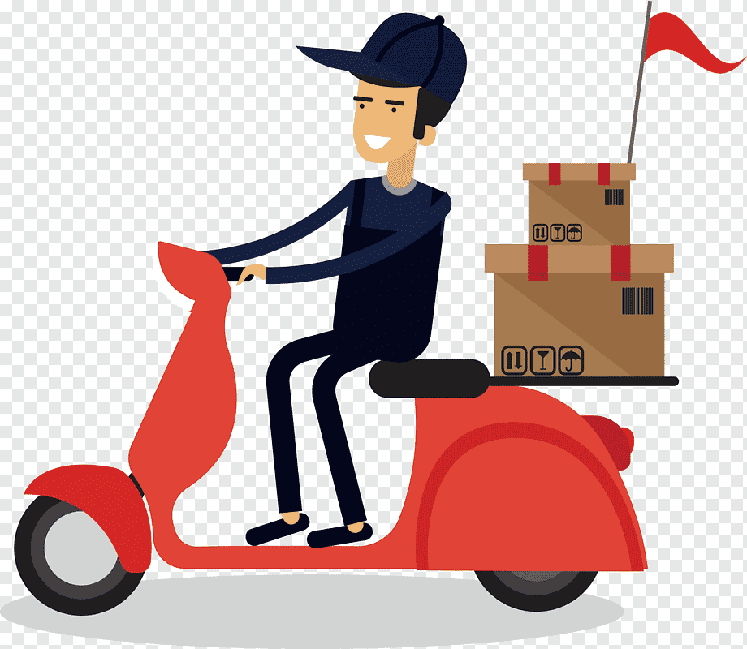
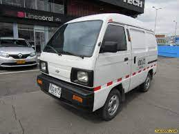
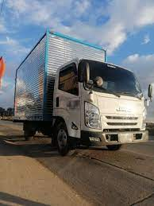
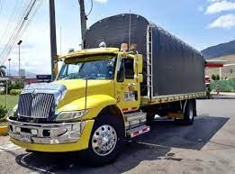
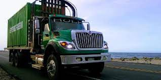
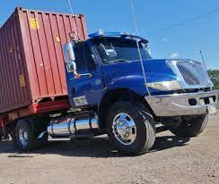
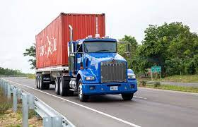
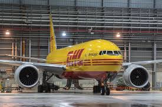

TIPOS DE VEHICULOS TERRESTRES
MOTO

La moto funciona para transportar mercancia pequeña que no sobrepase las medidadas y el perso autorizado, por lo general este tipo de transporte se utiliza dentro de la ciudad y se maneja para productos que quepan dentro de una maleta
VEHICULO CARRY

Este tipo de vehiculo tiene un peso permitido de 500 kilos, por lo general se transporta paqueteo y carga pequeña dentro de su propia ciudad
VEHICULO TURBO

Por lo general este tipo de vehiculo tiene una capacidad de 4.5 toneladas permitidas para transportar carga, basicamente se usa para el transporte de paqueteo dentro o lugares aledaños a la ciudad
VEHICULO SENCILLO

Este tipo de vehiculo tiene una capacidad maxima de 11 ton, el tamaño de su plancho es similar al de un contenedor de 20 pies, este vehiculo trabaja a nivel nacional con mudanzas, paqueteria o carga seca
VEHICULO DOBLETROQUE

Este vehiculo cuenta con 3 ejes es decir a diferencia del sencillo y la turbo tiene dos llantas mas que permite una capacidad superior de 18 toneladas, este vehiculo trabaja normalmente se ve transportando mercancia por todas las carreteras a nivel nacional
VEHICULO MINIMULA (PATINETA)

Tractocamión de dos ejes con semirremolque de dos ejes, Este vehiculo cuenta con un trailer que hace que el vehiculo clasifique como "vehiculo rigido" ya que tiene dos partes, este vehiculo tiene una capacidad de carga maxima de 24 ton, ademas permite cargar mercancia extradimencional
VEHICULO TRACTOMULA

Este vehiculo es el mas grande en el gremio del transporte de carga, tiene una capacidad maxima de 37 toneladas, ademas de poder cargar todo tipo de mercancia por todos los lugares de la ciudad, se diferencia en la minimula ya que cuenta con tres ejes en la parte del cabezote lo cual lo hace ser mas rigido para soportar el peso maximo
VEHICULOS DE CARGA AEREOS
AVION CARGUERO
